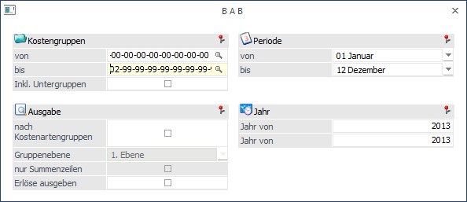
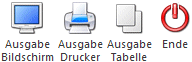
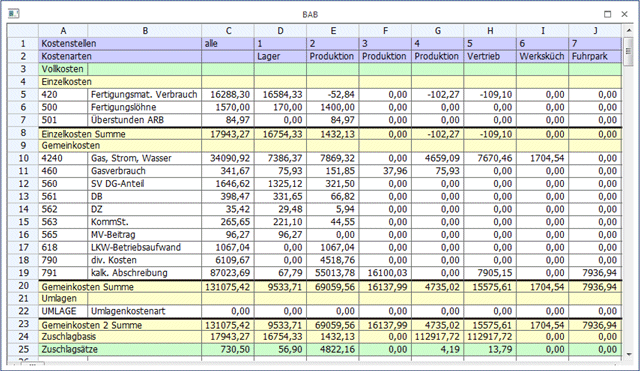
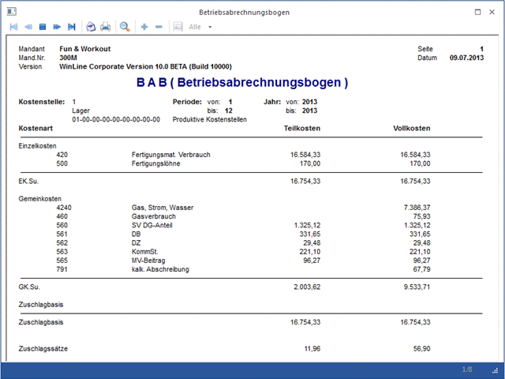

Im Menüpunkt
1 Auswertungen
1 BAB
oder Schnellaufruf
1 STRG + B
werden die Gemeinkostenzuschlagssätze auf Basis der IST-Kosten berechnet. Die errechneten GK-Zuschlagssätze bilden die Voraussetzung für die Durchführung der Nachkalkulation Ihrer Kostenträger/Projekte.
In einer Tabelle werden alle angefallen Einzel- und Gemeinkosten summiert und in den Kostenstellen in denen sie angefallen sind dargestellt. Die einzelnen Kostenstellen bilden in Summe mit den Umlagezeilen der Hilfskostenstellen die Gemeinkostensumme. Als Endergebnis erhält man zwei Zuschlagssätze. Einen Gemeinkostenzuschlagssatz der auf Basis der variablen Kosten (=Teilkosten) und einen auf Basis der Vollkosten (= variable zuzüglich der fixen Kosten) berechnet wird.

Ø Selektionskriterien
Durch Eingabe von Perioden/Jahr ist die Auswertung von Zuschlagssätzen auf Basis einer oder mehrerer Perioden möglich.
Ø Periode von - bis
Einschränkung der Perioden für die die Gemeinkostenzuschlagssätze berechnet werden sollen.
Ø Jahr von - bis
Einschränkung auf das Jahr, in dem die Gemeinkostenzuschlagssätze berechnet werden sollen. Achten Sie auf die richtige Jahreseingabe bei abweichendem Wirtschaftsjahr.
Ø Kostengruppen von - bis
Wird die Eingabe mit ENTER (ohne Eintrag) übergangen, werden automatisch alle Kostengruppen inkl. aller Untergruppen in die Auswertung einbezogen. Wenn der Bereich durch die Eingabe einer Kostengruppe eingegrenzt wird, werden nur die Daten ausgewertet, die sich innerhalb der Selektion befinden.
Damit die Gruppen bei Eingabe einer Einschränkung mit allen Ebenen richtig übernommen werden, empfehlen wir die Suche mit dem Gruppenmatchcode oder F9 zur Übernahme. Sie erhalten automatisch im Kostengruppenmatch alle im System vorhandenen Gruppen mit allen Unterebenen als Vorschlag angezeigt.
Ø Inkl. Untergruppen
Ist diese Option aktiviert, erfolgt die Auswertung inkl. aller bebuchten Untergruppen, falls Sie eine Einschränkung (von - bis) bei den Kostengruppen eingetragen haben.
Ø Summierung
Es kann nach Kostenartengruppen summiert werden. Geben Sie die Gruppenebene ein für die eine Summierung erfolgen soll. Sie können wählen ob Sie alle Zeilen sehen möchten oder nur die Summenzeilen.
Ø Erlöse ausgeben
Ist diese Option aktiviert, werden am Ende jeder Kostenstelle auch die Erlöse angezeigt. Da die Erlöse im eigentlichen Umfang des BAB keine Rolle spielen (da der BAB grundsätzlich der Ermittlung der Gemeinkostenzuschlagsätze dient) kann die Ausgabe optional aktiviert werden.
Die Zahlen werden automatisch auf zwei Nachkommastellen genau ausgegeben.
Nach bestätigen des Buttons "OK" wird der Druck des BAB und damit die Berechnung der Gemeinkostenzuschlagssätze auf Basis der erfassten IST-Kosten gestartet. Dadurch werden die Zuschlagssätze für die Nachkalkulation aktualisiert.
Buttons

Ø Ende
Das Fenster wird geschlossen.
Ø Ausgabe Bildschirm
Die Statistik wird am Bildschirm ausgegeben.
Ø Ausgabe Drucker
Die Statistik wird am Drucker ausgegeben.
Ø Ausgabe als Tabelle
Für die Bearbeitung erhalten Sie am Bildschirm ein File, das Sie noch bearbeiten können. Mit der rechten Maustaste können Sie das Menü "Exportiere Tabelle" aufrufen. Danach können sie die Datei als Excelfile abspeichern. Das Fenster mit der Tabelle können Sie mit der Tastenkombination Strg + F4 oder mit ESC wieder verlassen:

